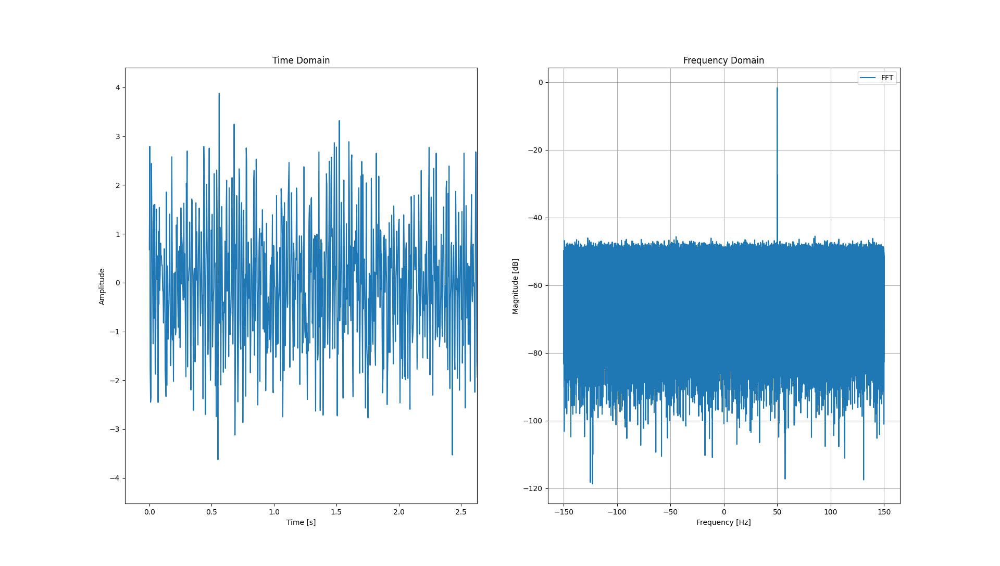
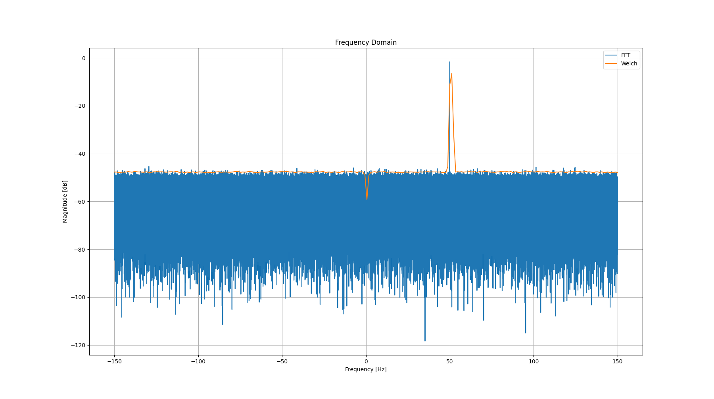

Digital Signal Processing was a topic I believed I would never figure out. That mentallity completely changed after interning with Motorola Solutions the summer of 2022. When I had applied for the internship, it was for a role in embedded systems, but as the start date of the internship approached, my manager gave me more details on the project I was going to work on. It was still in the realm of embedded systems, but little did I know that I would be working with a software defined radio.
The project I was tasked with was creating a software module in Python that would allow this software defined radio to be able to pick up radio frequency activity for hours on end, and then process the signals that the radio picked up and be able to describe their attributes. The attributes to be defined included the center frequency a signal was found at, what time a signal was found, its bandwidth, its amplitude in decibals, and how many times the signal appeared on and off. Why was this script so important to the device? Well, the main purpose of this software defined radio was to fake the presence of radio frequency activity. Radio frequencies are everywhere, and they are essential to communication. There are standards such as LTE, Bluetooth, TDMR, Wifi, and even the radio frequencies that come out of your microwave. It's difficult to try and mask the radio frequencies that you may use for communication. That's why this radio intentionally sent out radio frequency activity so that anyone trying to listen in on the RF activity going on, would be misled to thinking that a group of people have set up a base of communication in a certain location. In reality, this small device is just pumping out meaningless signals with no one near.
I'm of course, exaggerating a little when I say that the SDR pumped out meaningless data. If it was purely meaningless data, others trying to listen in would eventually catch on. In order to emit signals, .wav audio files needed to be loaded onto the device while also configuring the device to pump out these .wav files at certain frequencies and intervals. It could also be loaded with pure IQ sample data and pump that information from the device as well. IQ samples are the digital samples of signals interpreted by an SDR. Loading data onto the SDR and configuring it may seem relatively simple to anyone with a background in digital signal processing, but this may not be the case for everyone. Therefore, this software module that I created made it so that anyone could use the device with ease. With a few switches available on the device, a user could simply put the radio into receive mode, conduct business as normal for a few hours while the radio picks up the radio activity near the user, and then the flip of another switch would take the radio out of receive mode, process the data it recorded, and begin transmitting what it found. Even better, since it begins transmitting the signals it was picking up in the first place, it looks as if the user who set up the device never left.
Though the goal of my project was fairly straightforward, I didn't know where to begin. Though I had taken a class that was an introduction to digital signal processing (ECE 310 at UIUC), I believed that it focused so much on the mathematical and theoretical details, that it was difficult to interpret the applications of digital signal processing. Luckily, I had also taken a class concurrently with ECE 310 which was a lab section that dealt with looking more into the applications of digital signal processing (ECE 311). The class definitely helped, but the labs were purely in Python and at times, it seemed as if I was writing code to generate graphs while hoping the graph I created was the right one to receive the grade points. This may not have been the experience for everyone, but it most certainly was for me. As I settled into the cubicle that I would be working out of for the majority of the summer, my team left me with an ADALM-PLUTO SDR Learning Module before actually letting me use the prototype they were developing on. With this small SDR and some scripts that they left me, I began playing around with it and looking for other resources to help reinforce the concepts of digital signal processing into my mind. For the first two weeks, I would create and run my own scripts to run on the Pluto while also reading articles, videos, and even writing code alongside this website resource that I believe is amazing for anyone who is trying to learn and apply digital signal processing (in order to code alongside this resource, an ADALM-PLUTO is required). After those two weeks of testing and learning, I felt as if I had finally developed a knowledgeable foundation to begin working on. The next step was planning and actually developing on the SDR prototype.
When it came to planning, I had to take hardware limitations into account. Since this radio was a pretty small device, that meant it didn't carry lots of processing power or memory. Memory was most definitely the biggest issue, but even if I had worked on a device that had ample memory, iq data isn't cheap. One of the goals for this radio was to be able to look at a large frequency spectrum at once, more specifically, at least 40 MHz of spectrum. The number of iq samples depends on how much spectrum of signal bandwidth you are analyzing, as well as the sample rate and how long you are recording samples. The sample rate is how many samples of iq data is recorded per second, and according to a theorem called the Nyquist Theorem, the sample rate should be at least twice that of the bandwidth of spectrum you are analyzing to prevent a phenomenon called aliasing (learn more about aliasing here). The benefit of IQ sampling is that every time a sample for a signal is recorded, a qudrate copy of the sample is created as well. This means that if we look at a spectrum of 40 MHz, then a sampling rate of 40 megasamples/second fulfills Nyquist's Sampling Theorem. Now, if we were to record a signal for only one second, then that means 40 megasamples of data is recorded, or 40 million samples. That's already an incredibly large amount, and the SDR radio is supposed to be able to listen to signal activity for hours on end. It's easy to see that this amount of samples can quickly eat up memory. Thus when it came to planning, I first needed to figure out how to record signals for hours on end without the radio crashing in a few seconds from memory overload. During my two weeks of looking at resources on digital signal processing, I ended up coming across something I never heard of before called Welch's Method that proved to be the key to fixing my memory issue.
Welch's Method is a digital signal processing technique used to approximate signals, and it was exactly what I needed. At a high level, it's very simple in that it replicates signal activity but without returning as many samples. The number of samples the method returns is configurable among other things. Thanks to the abundant amount of libraries available in Python, especially with signal processing, it was easy to incorporate this method into my scripts, and the results I found right away were astounding. To give more detail about how these samples are used to analyze signals, its important to know the difference between analyzing signals in the time and frequency domain. The time domain should be familiar to everyone. An example of a graph in the time domain would be if we wanted to look at the distance a car covers over a period of time. The x-axis could be minutes, and the y-axis could be the number of miles. But for signals, the graph becomes nearly meaningless to the human eye. The x-axis is still in time, and the y-axis is the amplitude of the signal. Yet, it takes much more effort to gauge the center frequency of a signal from the time-domain than the frequency-domain. Through a method called the Fast Fourier Transform method though, we could transform this signal graph from the time to the frequency domain. In the frequency domain, things become much clearer. I coded a quick example to display the results of a signal in its time domain versus its frequency domain. The bulk of the code is from pysdr.org, I just added an additional graph that shows the signal in the time domain.
Since matplotlib generates visual graphs, results may load slowly so I recommend running the code in your local IDE and viewing the results
As you can see above, the signal in the time domain looks quite messy. It's actually a simple sin wave oscillating at a frequency rate of 50 Hz with noise surrounding the signal. With the human eye, its impossible to look at this graph, discern the sin wave, and count how many times it oscillates in one second to determine its frequency. After transforming the signal to the frequency domain though using the Fast Fourier Transform method, it becomes much more clear. The sin wave can be seen at 50 Hz on the x-axis where its amplitude is much greater than everything else surrounding it. An indication of how much of that frequency was present during the amount of time we captured the signal. Everything else in this frequency domain graph can be considered noise. Typically, the threshold where noise congegrates is called the noise floor.
import numpy as np
import matplotlib.pyplot as plt
from scipy import signal
Fs = 300 # sample rate
Ts = 1/Fs # sample period
N = 1048576 # number of samples to simulate
psd_length = 256
t = Ts*np.arange(N)
x = np.exp(1j*2*np.pi*50*t) # simulate sinusoid at 50 Hz
n = (np.random.randn(N) + 1j*np.random.randn(N))/np.sqrt(2) # complex noise with unity power
noise_power = 2
r = x + n * np.sqrt(noise_power)
PSD = (np.abs(np.fft.fft(r))/N)**2
PSD_log = 10.0*np.log10(PSD)
PSD_shifted = np.fft.fftshift(PSD_log)
f = np.arange(Fs/-2.0, Fs/2.0, Fs/N) # start, stop, step
_, psd = signal.welch(r, Fs, 'hamming', psd_length, return_onesided=True, scaling='density', average='median')
psd_dB = np.fft.fftshift(10*np.log10((np.abs(psd)/psd.shape[0])**2)) + 44 # small miscalculation I made requiring an offset to correct the graph
f_welch = np.linspace(Fs/-2.0, Fs/2.0, psd_length)
plt.figure(figsize=(18,12))
plt.subplot(121)
plt.plot(t, np.sin(2*np.pi*50*t))
plt.xlabel("Time [s]")
plt.ylabel("Amplitude")
plt.title("Time Domain")
plt.subplot(122)
plt.plot(f, PSD_shifted, label="FFT")
plt.plot(f_welch, psd_dB, label="Welch")
plt.xlabel("Frequency [Hz]")
plt.ylabel("Magnitude [dB]")
plt.title("Frequency Domain")
plt.grid(True)
plt.legend()
plt.show()
Note that the samples used are above 1 million yet Welch only outputs 256 samples
Here, I've added more modifications where I still transform the signal to the frequency domain using a standard FFT, but I also transform it using Welch's method. Pay close attention to the variable labeled 'psd_length'. This variable is used to set the output size of Welch's method. This number can be anything less than or equal to the number of samples fed to the Welch function, but the smaller the number, the worse the precision. You would imagine that specifiying an output of 256 samples would lead to such a gross approximation of the signal, yet the results below are interesting.
Welch's Method displays a very good approximation while using much less memory
The approximation is still really similar to the FFT, while using significantly less memory. With this drastic improvement in memory, I knew I took a step in the right direction. There are of course trade offs with this method which involves in the loss of precision. This loss of precision was nothing too drastic. The bandwidth, amplitude could still be determined to a good degree. The only disadvantage this introduced was being able to determine the modulation type of a signal. At an extremely high level, modulation is how a signal is encoded so that a receiver on the other end is able to decode the signal and interpret the information sent as long as they are aware of the modulation type used. As nice as this would have been to determine, it was out of my scope for the summer and would have most definitely required more memory usage.